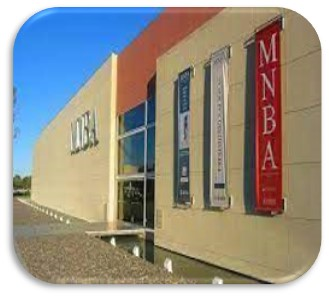
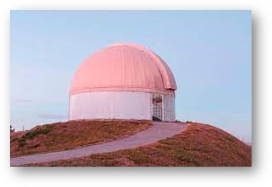
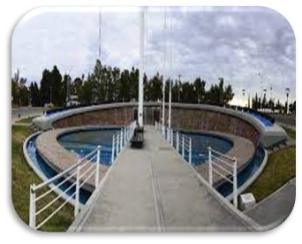
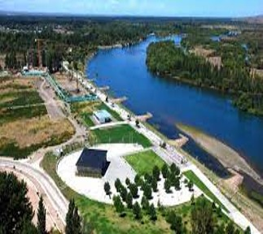
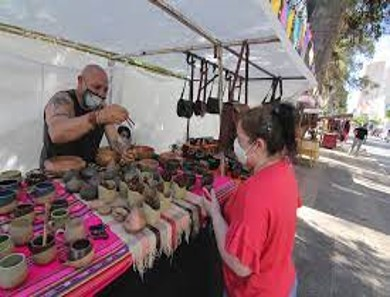

<!DOCTYPE html>
<html lang="es">
<head>
    <meta charset="UTF-8">
    <meta http-equiv="X-UA-Compatible" content="IE=edge">
    <meta name="viewport" content="width=device-width, initial-scale=1.0">
    <title>Neuquén Turismo</title>
    <link rel="stylesheet" href="./style.css">
</head>
<body>
</body>
</html>
<table>
    <tr>
        <th>
            
        </th>
        <th>Inicio</th>
        <th>Lugares</th>
        <th>Nosotros</th>
    </tr>
</table>
<table>
    <caption>Lugares turisticos en Neuquén</caption>
    <tr>
        <th>Museo nacional de bellas artes</th>
        <th>Observatorio astronomico</th>
        <th>Plaza de las banderas</th>
        <th>Paseo de la costa</th>
        <th>Paseo de los artezanos</th>
    </tr>
    <tr>
        <td>Esta ubicado en el parque central de la Ciudad de Neuquén, inaugurada en Septiembre 2004.
            Podemos disfrutar de una Galería de arte europeo, Argentina y Latinoamericano.
            A diario se desarrollan exposiciones de carácter nacional y un auditorio con capacidad para 300 personas.
</td>
        <td>Se encuentra ubicado en el ángulo conformado por calle Jesús maría y el acceso al Rincón de Emilio, al noroeste de la Plaza de las Banderas.
            Consta de 3 telescopios de imagen compuesta capaces de detectar desde la luz visible hasta radiaciones del espectro de los rayos infrarrojos.
            Este observatorio permite contemplar la totalidad de los planetas del sistema solar, así como también galaxias, estrellas y cúmulos estelares. 
            Además cuenta con una estación meteorológica que devela a sus visitantes los secretos del clima.
   </td>
        <td>  Este monumento del centenario fue construido en 2004 para el centenario de la ciudad.
            Cuenta con el mástil mas alto de la Patagonia de 49,6 metros. 
            Anteriormente en el mismo lugar se encontraban 21 mástiles que recordaban a los regimientos de la Campaña del desierto.
</td>
        <td>Este paseo constituye un espacio apto para la recreación y el disfrute. 
            Hermosa vista del rio Limay .
            En ella se desarrollan diversas áreas como la gastronómica, turística, centro de convenciones y música .
            </td>
        <td>Esta feria tuvo comienzo en el año 1979.
            Cuando los artesanos pasaban por Neuquén con destino a Bariloche o El Bolsón .
            Se instalaban en la plazoleta y la gente se acercaba para ver sus artesanías.
            Así poco a poco se acercaban los artesanos de la ciudad para mostrar sus trabajos.
            Al año siguiente la feria fue integrada al circuito cultural de la ciudad.
            En 1987 se da el impulso al emprendimiento con la construcción de bancos y las instalación del tendido eléctrico.
            En noviembre se festeja el cumpleaños de la feria acompañado de un encuentro de artesanos y artistas callejeros de todo el país y de afuera. 
            Sin embargo cada fin de semana del año, además de los diferentes puestos se realizan espectáculos musicales, de títeres, mimos, malabaristas, etcétera  
            </td>
    <tr>
        <td>
            
        </td>
        <td>
            
        </td>
        <td>
            
        </td>
        <td>
            
        </td>
        <td>
            
        </td>
    </tr>
</tr>
</table>